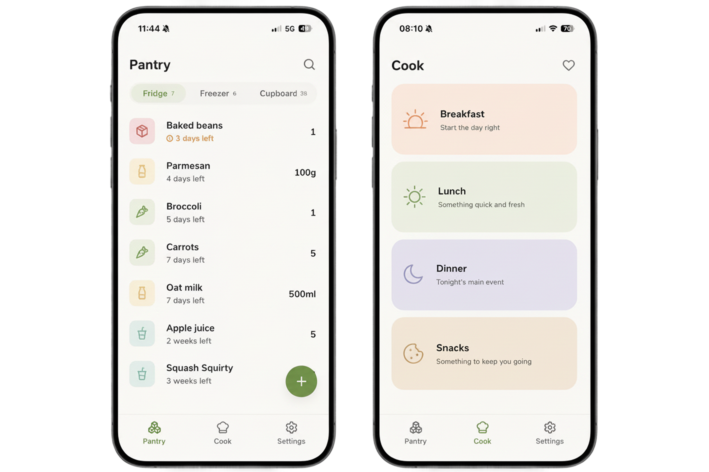
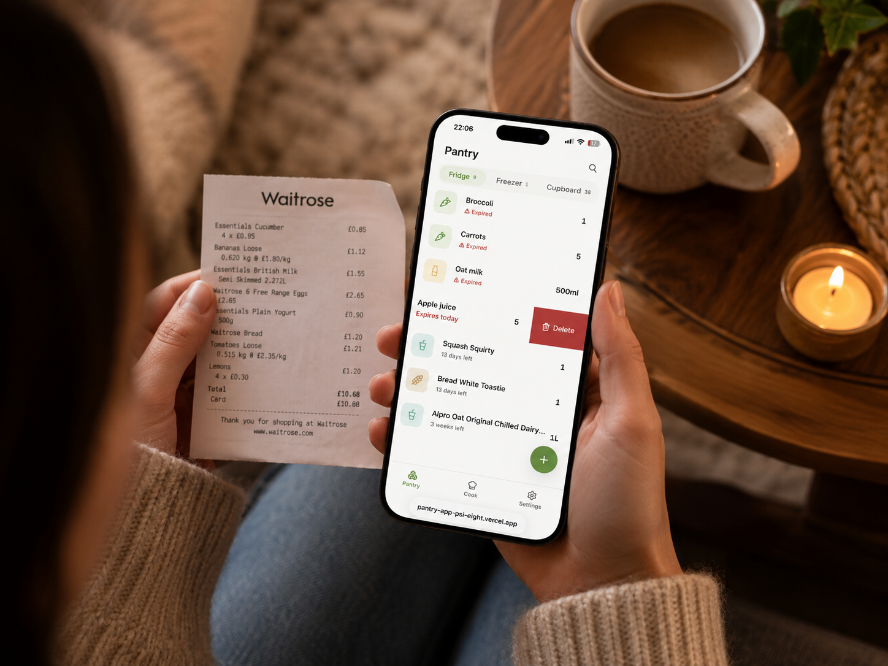
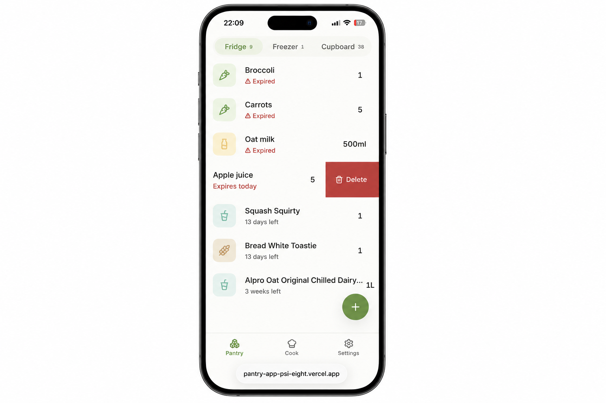
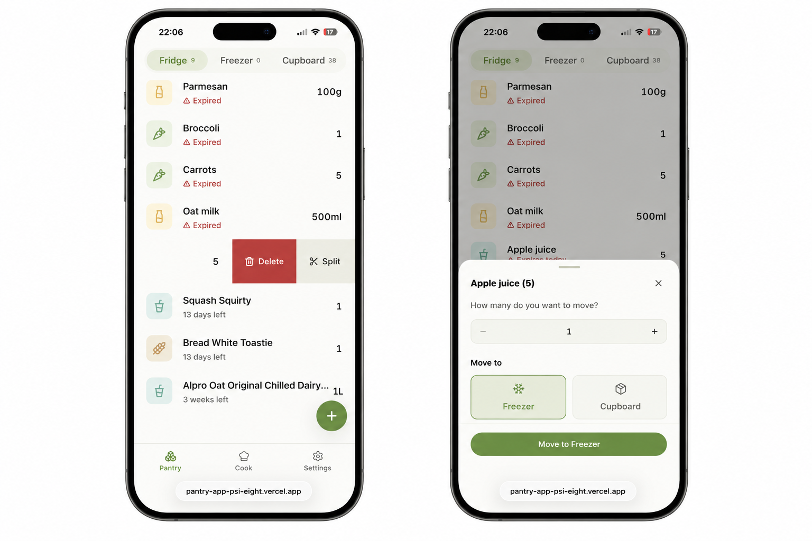

Personal project · App design & development
Reducing food waste through a smarter household pantry

Quick read
Project overview
We had a simple, recurring problem: we'd open the fridge, have no idea what was about to go off, and end up defaulting to the same handful of meals — or worse, throwing food away that we'd forgotten about. No app we tried felt worth the overhead of maintaining it.
Pantry is the app I built to close that loop. Scan a receipt and your shopping gets added automatically. The app tracks what you have across fridge, freezer, and cupboard, surfaces anything about to expire, and suggests meals based on what's actually there. Log a meal and the ingredients are deducted. It's a tight, deliberate habit loop — nothing more.
Responsibilities
Product strategy, UX design, frontend development, AI integration
Target users
Two-person household — initially just me and my partner
Status
In active daily use — core habit loop shipped, Cook page in progress
Problem statement
We couldn't cook confidently from what we had — because we didn't know what we had.
Without a reliable view of what was in the fridge, freezer, or cupboard, every meal decision started from scratch. Expiry dates were invisible until it was too late. Meal planning happened independently of actual inventory, leading to duplicate buying, forgotten leftovers, and the same handful of meals on repeat.
Every app we tried solved part of the problem but created new friction in the process. Maintaining them felt like a second job. The overhead wasn't worth it, so they were abandoned — and the original problem remained.
Current known pains
- No visibility into what was in the fridge, freezer, or cupboard without physically checking
- Expiry dates went unnoticed until it was too late
- Meal planning happened independently of actual inventory
- Duplicate buying — restocking things we already had
- Leftovers forgotten at the back of the fridge
- Existing apps felt like admin — too much friction to keep accurate
Discovery & research
Validating the right problem.
Building the right thing.
Unlike a typical product project, I was both the designer and the primary user. Research looked different — rather than formal interviews, it was honest observation of our own household behaviour over time. The problem wasn't hypothetical. We were living it.
Before writing a line of code, I defined what a successful V1 had to do: close a single loop. Scan a receipt → inventory updates → cook something before it expires → inventory reflects what was used. Every feature that didn't serve that loop was deferred.
Scope decisions made upfront
- Two users, one shared pantry — no accounts, no auth overhead until the core habit loop was proven
- Web app (PWA) — accessible immediately from both phones, saveable to home screen, no App Store submission
- Static meal library first, AI for edge cases — pre-generated JSON library keeps the common case fast and free; Claude API reserved for sparse pantry situations
- No photos on meal cards — AI-generated images look wrong, stock images need a database, clean typography carries the cards better

Test & validate
Designing in the open.
Iterating from real use.
The first real user feedback didn't come from a usability session — it came from my partner using the app for the first time. She scanned a receipt, the pantry populated as expected, and then she did something I hadn't designed for: she wanted to split a quantity across two locations. Two loaves of bread — one for the cupboard, one for the freezer. The app had no way to do that.
That single moment shaped one of the most interesting design problems in the project: how do you let someone divide an item between storage locations without adding complexity to the main pantry view?
Split item feature
Rather than adding a top-level UI control, the split action was hidden behind a swipe gesture. Short swipe reveals two actions (Delete + Split); long swipe still commits delete. The Split action only appears for items with quantity greater than 1 — single-quantity items show Delete only, with Split hidden entirely. This keeps the interface clean for the common case.
What Changed
A single swipe-to-delete became a two-action gesture — short swipe reveals Delete and Split, long swipe still commits delete. The Split action is hidden entirely for single-quantity items, keeping the interface clean for the common case.
Before

After

CTA in the split drawer
The save button went through two iterations. "Save changes" felt generic. "Split item" was better but still abstract. The final version uses a dynamic CTA tied to the destination selection: "Move to Freezer", "Move to Fridge", "Move to Cupboard". The button communicates the outcome before the user taps it.
Solution
Design & Build
Pantry is built around a single core loop: know what you have → cook before it expires → keep the pantry accurate. Every design and development decision was made in service of making that loop feel effortless.
Receipt scanning with Claude AI
Photograph a supermarket receipt and Claude parses the items, infers storage locations (fridge / freezer / cupboard), and estimates expiry dates based on category. The result goes to a review screen before committing to the pantry — giving the user a chance to correct anything before it's saved.
Live inventory across three locations
The pantry view organises items across Fridge, Freezer, and Cupboard via a sticky segmented control. Items approaching expiry are surfaced first. Long-life items suppress the expiry field entirely — showing it would be noise, not signal.
Meal suggestions weighted toward expiry
The Cook tab surfaces meals that use the most at-risk ingredients first. A static pre-generated meal library handles the common case locally; the Claude API is reserved for edge cases like a sparse or unusual pantry. This keeps the feature fast and cost-effective.
Personalised onboarding
A five-step flow that collects cuisine preferences, dietary requirements, cooking confidence, and spice tolerance before the user reaches the pantry. Optional seed data populates the pantry with example items, so the app never feels empty on first use.
Core principles that shaped every decision
- Narrow scope first — prove the habit loop before adding users, features, or complexity
- Hide complexity, don't disable it — swipe actions hidden when irrelevant, not greyed out
- Static over dynamic where possible — pre-generated meal library avoids repeated AI costs
- Convert at display time, never at write time — unit conversions happen on read to prevent data corruption
How it was built
Claude as collaborator,
not just a tool.
Every feature in Pantry was shipped through a deliberate workflow: design decisions made conversationally with Claude, translated into precise implementation prompts, then executed in Claude Code against the real codebase. The toolchain — GitHub, Supabase, and Vercel — meant every decision had somewhere to land immediately.
The workflow
- Define the problem conversationally — new features started as a conversation, exploring options and making decisions. The split item feature is a good example: my partner found the gap, I described it conversationally, and through back-and-forth we landed on the interaction model before a line of code was written
- Translate decisions into Claude Code prompts — each agreed design decision was turned into a precise, implementation-ready prompt referencing existing components, specifying exact behaviour, and defining what was explicitly out of scope
- Ship via Claude Code — Claude Code executed the prompt against the live codebase, reading existing patterns, writing to the right files, and maintaining consistency with the established design system
- Infrastructure that stays out of the way — GitHub for version control, Supabase for real-time sync between both users' devices, Vercel for zero-config deployment on every push to main
What Changed
Design decisions made conversationally, translated into precise Claude Code prompts, and shipped against the live codebase — compressing the gap between idea and working product from weeks to days.
Built on Next.js · TypeScript · Tailwind CSS · Supabase · Claude API · Vercel
Metrics
A habit loop that actually works
Personal project — no revenue metrics. What matters is that we open it without thinking about it. That habit is harder to design than any individual feature.

Daily use
Core habit loop working
Both users open the app multiple times a week — the core habit loop is working

~90%
Static library coverage
Meal suggestions served from the pre-generated library without an API call

70–90%
Estimated AI cost reduction
Static-first approach versus a fully dynamic AI-powered suggestion model
Learnings & reflection
What I set out to prove
That a focused, single-loop app used daily by two real people is worth more than a feature-rich app nobody opens. Pantry validates that. We use it. It changed a small but real behaviour in our household.
What changed
- We're wasting noticeably less food — items that would have been forgotten now get surfaced before they expire
- Meal decisions feel more grounded — we cook from what's actually there rather than defaulting to memory
- The split item feature was designed entirely from observed real-world use, not assumptions
- AI-assisted development compressed the gap between "wouldn't it be nice if" and "we use this daily" to a matter of weeks
What I learned
- Your own frustration is a valid research method — the problem was real, the scope was constrained, and the solution was designed for actual behaviour, not hypothetical users
- Ship to real users early, even if that's just one person — my partner found a genuine gap in the first session. No amount of solo testing would have caught it
- Hiding complexity is a product decision, not just a UI decision — the split feature is only surfaced when it's relevant; showing it always would have added noise to every interaction
- Validation isn't always formal — the proof here is that we open the app without thinking about it. That habit is harder to design than any individual feature
- Claude Code as implementation handoff — using detailed Claude Code prompts as the primary mechanism for shipping features meant I could move from design decision to working code faster than any previous personal project
I'd build the Cook page sooner. Meal suggestions are where the app shifts from inventory tool to decision-making assistant — and that shift changes how often people reach for it. The habit loop gets stickier when the app solves "what should we eat tonight?", not just "what do we have."